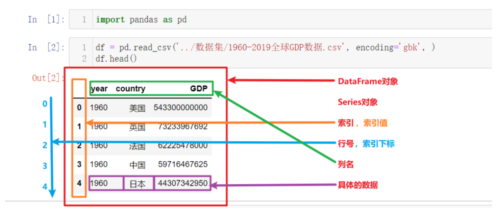

🐼 Pandas 基础：Series 与 DataFrame
Pandas 是商业和工程领域最流行的结构化数据工具集，用于数据清洗、处理与分析。它底层基于 NumPy（运行快），有专门处理缺失数据的 API，分组、聚合、转换功能强大而灵活。本讲从一个 GDP 数据的完整小案例开始建立体感，然后系统掌握两大数据结构 Series 与 DataFrame，以及索引、排序、运算、统计这些天天要用的基本功。
适用场景：数据量大到 Excel 卡顿的单机数据处理，以及大数据 ETL 中的清洗环节。安装：
pip install pandas（Anaconda 已自带）。
一、Pandas 初体验：GDP 数据小案例
先完整走一遍"读数据 → 筛选 → 设索引 → 画图"的流程，建立对 Pandas 的直观认识：
import pandas as pd # 1. 读取 csv 文件（中文数据常用 gbk 编码） df = pd.read_csv('./1960-2019全球GDP数据.csv', encoding='gbk') # 2. 条件查询: 选出中国的 GDP 数据 china_gdp = df[df.country == '中国'] # df.country 即选中 country 列 china_gdp.head(10) # 显示前10条 # 3. 把 year 列设置为索引 china_gdp = china_gdp.set_index('year') china_gdp.head() # 默认显示前5条 # 4. 一行画出 GDP 逐年变化曲线 china_gdp.GDP.plot()
多国对比也只是重复"筛选 + 画图"，用 rename 修改列名可以让图例显示国家名：
china_gdp = df[df.country == '中国'].set_index('year') us_gdp = df[df.country == '美国'].set_index('year') jp_gdp = df[df.country == '日本'].set_index('year') # 修改列名, 使图例显示为国家名; inplace=True 表示直接改原 df china_gdp.rename(columns={'GDP': '中国'}, inplace=True) us_gdp.rename(columns={'GDP': '美国'}, inplace=True) jp_gdp.rename(columns={'GDP': '日本'}, inplace=True) china_gdp['中国'].plot(legend=True) # legend=True 显示图例 us_gdp['美国'].plot(legend=True) jp_gdp['日本'].plot(legend=True) # 解决图表中文显示问题(运行一次即可) import matplotlib as plt plt.rcParams['font.sans-serif'] = ['SimHei'] plt.rcParams['axes.unicode_minus'] = False
两个实用的显示设置：
pd.set_option('display.max_rows', None) # 不限制显示行数 pd.set_option('display.max_columns', None) # 不限制显示列数 pd.reset_option('all') # 恢复所有选项默认值
二、Pandas 数据结构：Series 与 DataFrame
Pandas 的核心概念自上而下是：DataFrame → Series → 索引列（索引名/索引值、行号/下标）+ 数据列（列名、列值）。

1. Series 对象
Series 是类似一维数组的对象（DataFrame 的列对象），由两部分组成：
- values：一组数据（numpy.ndarray 类型）；
- index：数据索引标签；不指定时自动创建 0 到 N-1 的整数索引。
import pandas as pd import numpy as np # 用列表创建(默认自增索引) s2 = pd.Series([1, 2, 3]) # 自定义索引 s3 = pd.Series([1, 2, 3], index=['A', 'B', 'C']) # 用元组/字典创建(字典的键自动成为索引) pd.Series((1, 2, 3, 4, 5, 6)) pd.Series({'A': 1, 'B': 2, 'C': 3}) # 用 numpy 数组创建 pd.Series(np.arange(10))
常用属性与取值：
s4 = pd.Series([i for i in range(6)], index=[i for i in 'ABCDEF']) s4.index # 索引 s4.values # 值(ndarray) s4['A'] # 按索引取数据
2. DataFrame 对象
DataFrame 是类似二维表格（如 Excel）的对象，既有行索引又有列索引：
- 行索引：
index，0 轴，axis=0； - 列索引：
columns，1 轴，axis=1。
三种常用创建方式：
# 1. 字典 + 列表: 键是列名, 默认自增行索引 df1 = pd.DataFrame(data={ '日期': ['2021-08-21', '2021-08-22', '2021-08-23'], '温度': [25, 26, 50], '湿度': [81, 50, 56] }) # 2. 列表 + 元组: 手动指定列名和行索引 df2 = pd.DataFrame( data=[('2021-08-21', 25, 81), ('2021-08-22', 26, 50), ('2021-08-23', 27, 56)], columns=['日期', '温度', '湿度'], index=['row_1', 'row_2', 'row_3'] ) # 3. numpy 数组创建: 给随机成绩加上行列索引, 可读性大幅提升 score = np.random.randint(40, 100, (10, 5)) subjects = ['语文', '数学', '英语', '政治', '体育'] stu = ['同学' + str(i) for i in range(score.shape[0])] data = pd.DataFrame(score, columns=subjects, index=stu)
常用属性与方法：
| 属性/方法 | 作用 |
|---|---|
df.shape |
形状，如 (10, 5) |
df.index / df.columns |
行索引 / 列索引 |
df.values |
取出其中的 ndarray 值 |
df.T |
转置 |
df.head(n) / df.tail(n) |
查看前/后 n 行（默认 5 行） |
3. 索引的设置
# 1. 修改行索引: 只能整体全部修改, 不能只改其中一个 stu = ['学生_' + str(i) for i in range(score.shape[0])] data.index = stu # data.index[3] = '学生_3' # 错误! 不支持单个修改 # 2. reset_index(drop=False): 重设为默认整数索引 data.reset_index() # 原索引变成普通列保留 data.reset_index(drop=True) # drop=True 时删除原索引 # 3. set_index(keys, drop=True): 以某列(或多列)作为新索引 df = pd.DataFrame({'month': [1, 4, 7, 10], 'year': [2012, 2014, 2013, 2014], 'sale': [55, 40, 84, 31]}) df.set_index('month') # 以月份为索引 df = df.set_index(['year', 'month']) # 设置多级索引(MultiIndex)
三、Pandas 的数据类型
df 或 Series 中具体值的类型：
| Pandas 数据类型 | 说明 | 对应 Python 类型 |
|---|---|---|
| object | 字符串类型 | string |
| int / float | 整数 / 浮点数 | int / float |
| datetime | 日期时间类型 | datetime.datetime |
| timedelta | 时间差类型 | datetime.timedelta |
| category | 分类类型 | 无原生类型 |
| bool | 布尔类型 | bool |
| nan | 空值类型 | None |
查看类型：s.dtypes、df.dtypes、df.info()（Series 没有 info 方法）。
三个特殊类型的用法：
# datetime: 字符串转日期 dates = pd.to_datetime(['2024-09-01', '2024-09-02', '2024-09-03']) # timedelta: 两个日期相减得到时间差 delta = pd.to_datetime('2024-09-05') - pd.to_datetime('2024-09-01') # 4 days # category: 分类类型, 用于有限集合数据(性别/颜色等), 更省内存、操作更快 categories = pd.Series(['apple', 'banana', 'apple', 'orange'], dtype='category')
四、基本数据操作：索引、赋值与排序
以一份真实股票数据为例（先删掉几列让数据简单些）：
data = pd.read_csv('./data/stock_day.csv') data = data.drop(['ma5', 'ma10', 'ma20', 'v_ma5', 'v_ma10', 'v_ma20'], axis=1)
1. 三种索引方式
# 1. 直接索引: 必须先列后行, 且只能用索引名 data['open']['2018-02-27'] # 23.53 # data['2018-02-27']['open'] # 错误! 不能先行后列 # data[:1, :2] # 错误! 不支持数字切片组合 # 2. loc: 先行后列, 用"索引名" data.loc['2018-02-27':'2018-02-22', 'open'] # 3. iloc: 先行后列, 用"下标" data.iloc[:3, :5] # 前3天数据的前5列
记忆：直接索引先列后行；loc 名字、iloc 数字，都是先行后列。
2. 赋值
data['close'] = 1 # 把 close 整列赋值为 1 data.close = 1 # 效果同上
3. 排序
# DataFrame 按内容排序: by 可以是单个键或多个键, ascending=False 降序 data.sort_values(by='open', ascending=True).head() data.sort_values(by=['open', 'high']) # 多键排序 # DataFrame 按索引排序: 让日期索引从小到大 data.sort_index() # Series 排序: 只有一列, 不需要 by 参数 data['p_change'].sort_values(ascending=True) data['p_change'].sort_index()
五、DataFrame 运算
1. 算术运算
data['open'].add(1) # 等价于 data['open'] + 1 data['open'].sub(1) # 减法
2. 逻辑运算与筛选
# 布尔向量: 逐行判断 data['open'] > 23 # 布尔向量作为筛选依据 data[data['open'] > 23].head() # 多条件组合: 每个条件必须用小括号包裹, 用 & | 连接 data[(data['open'] > 23) & (data['open'] < 24)].head() # 逻辑运算函数, 更简洁: data.query('open<24 & open>23').head() # query(查询字符串) data[data['open'].isin([23.53, 23.85])] # isin: 是否为指定的固定值
3. 统计运算
# describe(): 一次得出 count/mean/std/min/25%/50%/75%/max 综合统计 data.describe() # 单个统计函数: axis=0 按列统计(默认), axis=1 按行统计 data.max(0) data.var(0) # 方差 data.std(0) # 标准差 data.median() # 中位数: 从小到大排列取中间(偶数个取中间两数均值) # idxmax/idxmin: 最值所在的"索引位置"(比 numpy 的 argmax 更进一步, 直接给出索引名) data.idxmax(axis=0) # 每列最大值出现在哪一天 data.idxmin(axis=0)
常用统计函数一览：count（非空数量）、sum、mean、median、min、max、mode（众数）、abs、prod（乘积）、std、var、idxmax、idxmin。
4. 累计统计函数
| 函数 | 作用 |
|---|---|
cumsum |
前 1/2/…/n 个数的和 |
cummax / cummin |
前 n 个数的最大值 / 最小值 |
cumprod |
前 n 个数的积 |
# 按时间从前往后累计涨跌幅 data = data.sort_index() stock_rise = data['p_change'] stock_rise.cumsum() # 配合 plot 直接可视化累计曲线 import matplotlib.pyplot as plt stock_rise.cumsum().plot() plt.show()
5. apply 自定义运算
apply(func, axis=0)：对列（axis=0，默认）或行（axis=1）应用自定义函数：
# 每列的极差(最大值-最小值) data[['open', 'close']].apply(lambda x: x.max() - x.min(), axis=0) # open 22.74 # close 22.85
六、本讲小结
| 主题 | 关键点 |
|---|---|
| 数据结构 | Series（values + index）；DataFrame（行索引 index=0 轴，列索引 columns=1 轴） |
| 创建 | pd.Series(列表/字典, index=)；pd.DataFrame(data, index=, columns=) |
| 索引设置 | 行索引只能整体改；reset_index(drop=) 重设；set_index(keys) 支持多级索引 |
| 数据类型 | dtypes / info() 查看；to_datetime、timedelta、category |
| 三种索引 | 直接索引先列后行；loc 用名字、iloc 用下标（都先行后列） |
| 排序 | sort_values(by=, ascending=)、sort_index() |
| 运算 | 布尔筛选（多条件用 &、\| 加小括号）、query、isin |
| 统计 | describe 一步到位；idxmax/idxmin 定位最值索引；cumsum 累计；apply 自定义 |
下一讲进入 Pandas 进阶：文件读写、增删改查、缺失值处理、合并、分组聚合与透视表。